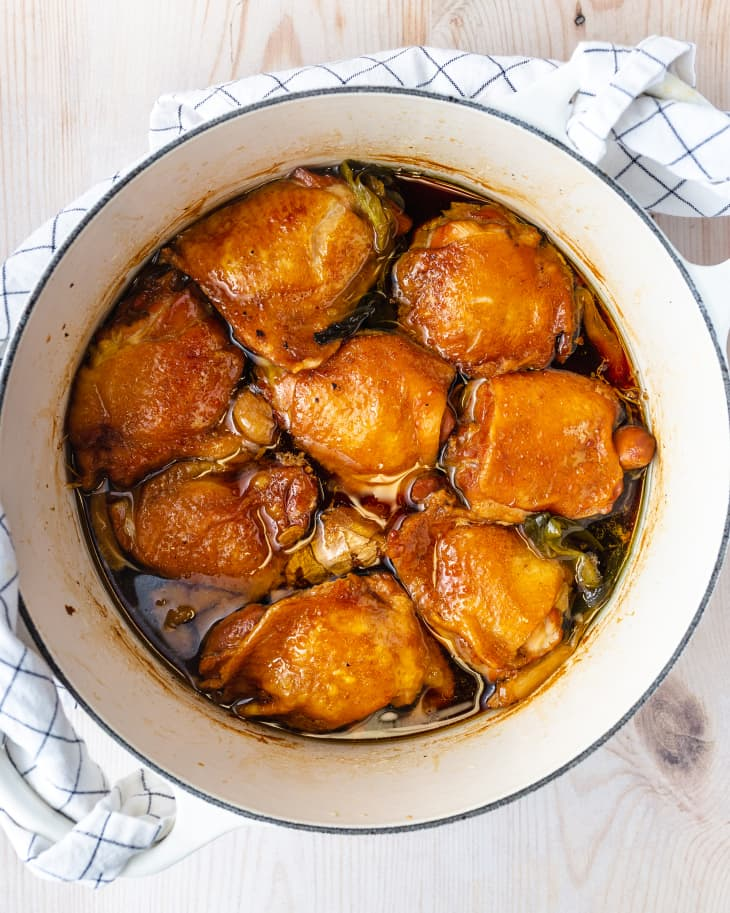

Shoyu Chicken

Bowl of delicious Shoyu Chicken
Ingredients
- 1 cup water
- 3/4 cup shoyu
- 1/4 cup packed light brown sugar
- 1/4 cup mirin
- 1/4 teaspoon freshly ground black pepper
- 4 cloves garlic
- 1 (3-inch) piece fresh ginger
- 4 medium scallions
- 8 bone-in, skin-on chicken thighs
Steps
- Place 1 cup water, 3/4 cup shoyu,
1/4 cup packed light brown sugar,
1/4 cup mirin, and 1/4 teaspoon black pepper
in a large pot or Dutch oven. Bring to a simmer
over medium-high heat, stirring until the sugar is dissolved
- Meanwhile, prepare the following, adding each to the pot
as you complete it: Peel 4 garlic cloves. Smash a 3-inch
piece of ginger with the flat side of a knife. Halve 4 medium scallions.
- Add 8 bone-in, skin-on chicken thighs to the pot skin-side down
in an even layer (they can overlap). Cover and reduce the heat to
medium-low. Simmer for 30 minutes.
- Uncover and flip the chicken thighs so that they are skin-side up, arranging
them into a single layer. Adjust the heat as needed to maintain a simmer so
that the bubbles between but not up and over the pieces of chicken. Simmer
uncovered until the chicken is tender, about 30 minutes more.
- Transfer the chicken to a serving platter. Spoon off any fat from the surface
of the sauce if desired. Serve the chicken and sauce with cooked white rice.